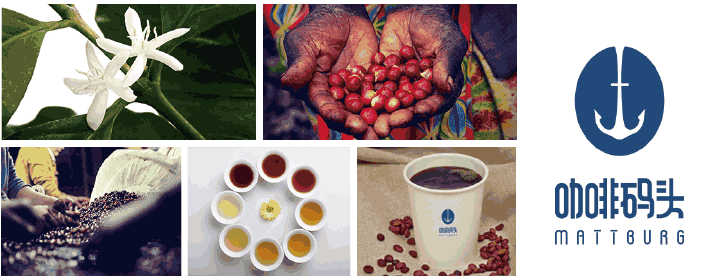

四百年来，咖啡的引用习惯已从西方传到东方，蔚然成风。咖啡码头，将正宗的欧式咖啡口感和高科技研磨技术带到了中国，掀起锐不可当的咖啡O2O风潮。
精选咖啡豆
德国人对咖啡有着特殊的情愫，大诗人歌德常出入佛罗里昂咖啡馆寻找灵感，贝多芬经常从咖啡中吸取音乐灵感... ...为了传承这样的情怀我们把正宗的德国咖啡带到了东方。
德式情怀
优质的咖啡豆，从种植、采收洗选、到烘焙的每个环节都很重要，掌握好咖啡的特色，才能真正让人通过一杯咖啡，重新酝酿心情、浸泡思维，找到新生的出口和喜悦。
德式品质
真正的德国品质源于对细节的把握和精益求精。在安全性上从配料到生产加工，再到出售都有严格的规定和检验。

中世纪时，哈尔茨山区隐匿着一座神秘的女巫之城，戈斯拉尔。戈斯拉尔矗立在山脚到半山腰的地方，那里的树木郁郁葱葱，清澈的河水从山上流淌而下。每年的四月底，女巫们都要聚集在山上跳舞狂欢。女巫们拖着长长的裙裾，疯狂的跳着舞，魔鬼则饮酒作乐，发出可怕的笑声。
那时的德国还是四分五裂的状态，战事不断，有一个叫mattburg的骑士，游经哈尔茨山区时，被那里的风景所迷住，顺着河流上游走去。天色已晚，因舟车劳顿，误闯了女巫们集会的禁地。女巫们很恼怒，想把它扔进锅里煮，作为晚餐。
女巫们问他，可否有未了的心愿？他说 ，他的马背上放着献给魔鬼的贡品，他要将这礼物供奉给魔鬼后，便可任女巫们处置。只见他从马背上拿下来一袋东西，打开一看，里面放的全是黑色的种子。他将这些种子倒进装着沸水的大锅里，不断地搅拌。一股浓郁的香气逐渐在空气中弥漫开来，这股气味如同兴奋剂一般，女巫们开始欢呼雀跃，他们沉醉在这迷人的香气中，忘记了mattburg的存在。趁此机会他逃脱了，他十分感谢这神奇的黑色种子，给他带来幸运。
这袋黑色的种子叫阿拉比卡咖啡豆，他听闻这是伊斯兰教的僧侣们治疗身心的秘药，便从阿比西尼亚高原（Abyssinia,现在的埃塞俄比亚高原）带回来一些。
为了纪念这次经历，mattburg开始致力于研究这神奇种子的熬制方法，酿成不同口味的美妙琼浆，喝过的人都赞不绝口。他将各种配方记录下来，留给后人，世代相传。这个故事成为了一段佳话，流芳百世。有人称，这是“魔鬼的饮料”，也有人称，这是“这是幸运的琼浆”。
如今，这神奇的种子，漂洋过海，来到了东方。
岁月变迁，沧海桑田。mattburg的后人仍然致力于研制美味可口的咖啡饮料。上个世纪以来，速溶咖啡逐渐扩大市场，随着高科技的发展，咖啡自动售卖机出现了，这带来了许多便利，但是现磨咖啡的香醇却是高科技无法复制的。如今，仍有很多咖啡爱好者热衷于引用现磨咖啡。他们宁可花许多时间和金钱泡在咖啡馆，或者在家自己潜心研究咖啡机，喝上一杯原滋原味的现磨咖啡。
如今在中国，许多人因为时间忙碌，只能每天喝道速溶咖啡，很难享受到原滋原味的现磨咖啡。作为mattburg咖啡精神的传承者，我们想将原滋原味的欧洲精品咖啡与这项革命性的研发技术，引进到中国来。
咖啡码头（mattburg）来自德国，发源于美丽的莱茵河畔。2015年进入中国市场，将德国的高科技带来中国。咖啡码头顺应“互联网+”的趋势，玩转咖啡O2O模式。咖啡码头的全自动现磨智能咖啡机，为现磨咖啡爱好者带来了许多便利。
HELLO
欢迎来到咖啡码头,如果您对我们的产品有任何意见或需求,请您给我们留言或者以下方式跟我们取得联系,我们将尽快给您回复,并为您提供最真诚的服务,谢谢！
米堡国际贸易(上海)有限公司
-
地址 :上海市徐汇区田林路487号三楼
-
招商经理：王经理
-
联系电话：13611683451
-
邮箱地址：xiaofeng.wang@mattburg.com
-
销售经理 ：余经理
-
联系电话：18321838835
-
微信账号：yy18321838835
-
邮箱地址：jimmy.yu@mattburg.com
扫一扫关注我们